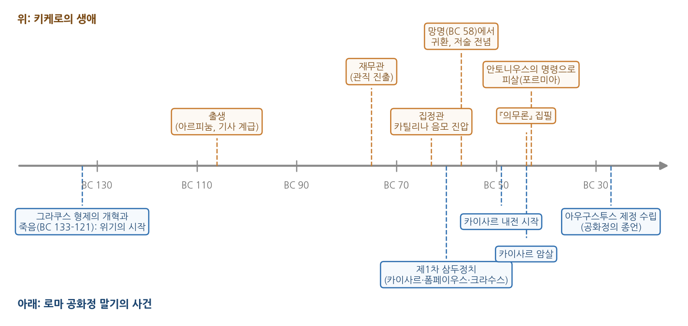

2주차 2차시. 행정의 기원 (3): 키케로의 의무론: 공직자의 책무
최종 수정: 2026-07-08 · 이 교재는 학기 중에도 계속 업데이트됩니다
공화국을 맡아 경영하는 일은 후견인의 일과 같다. 그것은 맡은 자가 아니라 맡겨진 자들의 이익을 위해 수행되어야 한다. (키케로, 『의무론』)
이 장에서 배우는 것
기원전 44년 3월, 로마의 독재관 카이사르가 원로원 회의장에서 암살당했다. 공화정을 지키겠다던 암살자들의 칼은 그러나 공화정을 되살리지 못했고, 로마는 다시 내전의 소용돌이로 빨려 들어갔다. 그해 가을, 예순두 살의 정치가 키케로는 정치의 중심에서 밀려난 채 책상 앞에 앉아 있었다. 그는 아테네에서 유학 중인 아들 마르쿠스에게 보내는 긴 편지 형식으로 마지막 저작을 써 내려갔다. 공직을 맡은 사람은 무엇을 해야 하고 무엇을 해서는 안 되는가. 평생을 공화국에 바친 사람이 무너져 가는 공화국 앞에서 정리한 이 유언 같은 책이 『의무론(De Officiis)』이다. 이듬해 그는 안토니우스가 보낸 자객의 손에 죽었다.
1주차 2차시에서 우리는 로마를 "최초의 행정 제국"이라 불렀다. 세금과 도로와 보급 체계가 군단을 떠받쳤고, 로마는 군사력만이 아니라 정의, 사회적 책임, 도덕성, 정당성을 정의하고 토론한 국가였다. 그 토론의 정점에 있는 인물이 키케로다. 그리고 직전 차시에서 읽은 공자를 떠올려 보자. 동쪽의 공자가 통치의 자격을 수신에서 찾았다면, 서쪽의 키케로는 공직자의 책무를 의무의 목록으로 정리했다. 500년의 시차를 두고 동서양이 같은 질문, 곧 "공적인 일을 맡은 사람은 어떤 사람이어야 하는가"에 답하고 있는 셈이다.
이 장에서는 다음을 배운다.
- 키케로의 생애와 로마 공화정 말기의 정치 상황
- 『의무론』의 공직자론을 다섯 대목의 원전 발췌로 읽는 법
- 공익 우선, 신의, 공정, 품위로 정리되는 공직자의 덕 개념
- 이 사상이 현대의 공직봉사동기 연구, 이해충돌 방지 제도와 어떻게 이어지는지
이 장은 하나의 질문을 따라 전개된다. "국가를 맡은 사람은 누구의 이익을 위해 일해야 하는가?"
2.1 키케로의 생애와 무너져 가는 공화정을 본다 → 2.2 『의무론』의 공직자론을 원전으로 읽는다 (원전 강독) → 2.3 공익 우선·신의·공정·품위, 공직자의 덕을 개념으로 정리한다 → 2.4 공직봉사동기와 이해충돌 방지라는 현대적 유산을 확인한다.
2.1 키케로와 로마 공화정의 마지막 날들
신참자, 공화국의 정점에 서다
마르쿠스 툴리우스 키케로(Marcus Tullius Cicero, 기원전 106-43)는 로마에서 남동쪽으로 떨어진 소도시 아르피눔의 기사 계급 집안에서 태어났다. 원로원 의원을 배출한 적 없는 집안 출신, 로마의 용어로는 "신참자(novus homo)"였다. 명문가의 후광 없이 그가 가진 무기는 말과 글이었다. 변호사로 명성을 쌓은 그는 재무관(기원전 75년)을 시작으로 관직의 사다리를 올라 법무관(기원전 66년)을 거쳐, 기원전 63년 로마 공직의 정점인 집정관에 올랐다. 집정관 재임 중 카틸리나의 국가 전복 음모를 적발해 진압하면서 그는 공화정 수호의 상징이 되었다. 다만 이때 음모 가담자들을 재판 없이 처형한 일이 두고두고 정치적 약점이 되어, 기원전 58년 로마에서 추방당했다가 이듬해 귀환했다. 정치의 전면에서 밀려난 뒤 그는 그리스 철학을 로마의 언어로 옮기는 저술에 몰두했다.
키케로가 산 시대는 공화정이 안에서부터 무너져 내리던 시대였다. 그림 2-2의 연표를 보자.

그림 2-2를 읽는 법은 이렇다. 가로선이 시간의 흐름이고, 선 위의 주황색 상자는 키케로의 생애, 선 아래의 파란색 상자는 공화정 말기의 큰 사건들이다. 여기서 알 수 있는 것은 키케로의 삶과 공화정의 위기가 정확히 포개진다는 사실이다. 그가 태어나기 한 세대 전, 그라쿠스 형제의 개혁 시도와 죽음(기원전 133-121년)으로 정치적 폭력의 시대가 열렸다. 그의 장년기에는 카이사르, 폼페이우스, 크라수스가 밀약으로 국정을 좌우한 제1차 삼두정치(기원전 60년)가 성립했고, 기원전 49년에는 카이사르가 군대를 이끌고 내전을 일으켰다. 카이사르 암살(기원전 44년)의 혼란 속에서 키케로는 마지막 정치 투쟁으로 안토니우스를 탄핵하는 연설을 이어 갔고, 그 대가로 기원전 43년 포르미아에서 살해당했다. 그의 죽음으로부터 16년 뒤 아우구스투스가 사실상의 1인 지배 체제를 세우면서 공화정은 끝났다. 『의무론』은 이 연표의 끝자락, 공화정의 임종 직전에 쓰였다.
왜 『의무론』인가
키케로는 그리스 철학의 소개자에 머물지 않고 정치와 행정의 근본 문제를 정면으로 다뤘다. 대화편 『국가론(De Republica)』은 정치 조직의 역할과 목적, 사회에서 정의가 왜 필요한지, 그리고 국가의 일을 맡아 관리하는 사람들에게 어떤 의무가 요구되는지를 탐구했다. 『법률론(De Legibus)』은 자연법의 원칙들을 해설했다. 그리고 생애 마지막 해에 쓴 『의무론』은 공적 생활에서의 도덕과 의무를 체계적으로 정리한 최종 결산이었다. 역사가 로마의 황제들을 주목한다면, 정치학과 행정학은 키케로를 주목한다. 황제들은 권력을 남겼지만 키케로는 공직이라는 직업의 규범을 남겼기 때문이다.
공화정(res publica)은 라틴어로 "공공의 것"이라는 뜻이다. 국가가 왕 한 사람의 소유물이 아니라 시민 전체의 공동 자산이라는 생각이 이름에 담겨 있다. 로마 공화정은 임기 1년의 집정관 2인, 원로원, 민회가 권력을 나누어 갖는 체제였다.
의무(officium)는 『의무론』의 핵심 개념으로, 각자가 맡은 지위와 역할에서 마땅히 해야 할 바를 뜻한다. 영어의 office(공직)와 officer(공무원)가 이 말에서 나왔다. 공직이라는 말 자체에 "의무를 맡은 자리"라는 뜻이 새겨져 있는 셈이다.
2.2 원전 강독: 의무론 발췌
이제 원전을 읽는다. 아래 발췌는 『의무론』 1권에서 공적 삶과 공직자의 의무를 다룬 대목들이다. 『의무론』의 원문은 라틴어이며 영어와 한국어 번역이 공개되어 있어 대조해 읽을 수 있다. 이 교재의 인용문은 원자료 교재의 번역을 뜻을 보존하며 자연스러운 한국어로 다듬은 것이다. 아버지가 아들에게 말하는 1인칭의 어조를 살려 두었으니, 편지를 받아 읽는 마르쿠스의 자리에서 읽어 보자.
강독 1: 자질 있는 자는 공적 삶에 뛰어들어야 한다
"국정을 감당할 자질을 타고난 사람이라면 머뭇거림을 버리고 관직에 나아가 공적 삶에 뛰어들어야 한다. 그 길이 아니고서는 나라를 다스릴 수 없고, 큰 기상을 드러낼 수도 없기 때문이다. 공적 삶을 택한 사람은 철학자 못지않게, 아니 어쩌면 그보다 더욱, 인간사에 대한 초연함과 평정한 마음, 근심으로부터의 자유를 갖추어야 한다. … 누구든 공적인 일을 맡으려 할 때에는 그 일이 얼마나 명예로운가만 볼 것이 아니라, 자신에게 그 일을 해낼 능력이 있는지도 살펴야 한다. 게으름 탓에 지레 포기해서도 안 되고, 욕심 탓에 제 능력을 과신해서도 안 된다. 어떤 일이든 착수하기 전에 철저한 준비가 앞서야 한다."
무슨 말인가. 두 가지 요구가 겹쳐 있다. 첫째는 참여의 의무다. 능력 있는 사람이 공직을 피하는 것은 개인의 선택이 아니라 공동체에 대한 책임 회피다. 나라는 오직 공적 삶에 뛰어드는 사람들을 통해서만 다스려지기 때문이다. 둘째는 자격의 성찰이다. 공직은 명예롭기 때문에 탐나는 자리이지만, 명예에 끌리기 전에 자신이 그 일을 해낼 수 있는지를 물어야 한다. 게으름이 낳는 회피와 탐욕이 낳는 과신, 양쪽 모두를 경계하라는 것이다.
왜 중요한가. 공직 취임의 요건을 "하고 싶은가"가 아니라 "할 수 있는가, 그리고 해야 하는가"로 설정하고 있기 때문이다. 직전 차시에서 공자가 명성(聞)과 통달(達)을 구분한 것과 정확히 같은 자리에 놓이는 문답이다. 자리를 원하는 마음과 자리를 감당할 능력은 별개이며, 공직의 출발점은 후자에 대한 정직한 자기 평가라는 것이다.
강독 2: 무기는 토가에게 굴복하라
"사안을 바르게 판단한다면, 시민적 삶의 성취 가운데는 전쟁의 성과보다 더 크고 더 이름 높은 것이 적지 않음을 알게 될 것이다. 테미스토클레스의 살라미스 해전은 유명한 승리로 칭송받지만, 솔론이 아레오파고스 평의회를 세운 일이 그보다 못하다고 할 수 없다. 승리의 이익은 한 번으로 끝났지만, 솔론이 세운 제도는 도시에 두고두고 봉사했기 때문이다. … 이 모든 것을 가장 잘 표현하는 구절이 있다. '무기는 토가에게 굴복하고, 월계관은 칭송에게 굴복하라.' 다른 것은 차치하고, 내가 공화국의 키를 잡았을 때 무기는 과연 토가에게 굴복하지 않았던가. 나의 경계와 나의 조언으로 가장 대담한 시민들의 손에서 무기가 떨어져 나갔다. 전쟁의 어떤 성취가 이보다 위대한가."
무슨 말인가. 토가는 로마 시민이 평시에 입는 옷이고, 무기는 군인의 것이다. 이 구절은 군사적 영광보다 시민적 통치, 곧 제도를 세우고 조언하고 조정하는 문민의 성취가 우위에 있다는 선언이다. 키케로는 그리스의 사례를 근거로 든다. 살라미스의 극적인 승리보다 솔론이 만든 평의회 제도가 더 오래 도시에 봉사했다는 것이다. 이긴 전쟁의 효과는 한 번으로 끝나지만 잘 세운 제도는 계속 작동한다. 마지막 문장에서 키케로는 자신의 집정관 시절, 즉 군대를 동원하지 않고 카틸리나의 무장 음모를 잠재운 일을 자랑스럽게 내세운다.
왜 중요한가. 1주차 2차시에서 본 것처럼 로마는 군사 제국이었고, 로마인의 영웅은 개선장군이었다. 그 문화 한가운데서 키케로는 칼이 아니라 토가 입은 행정가와 정치가의 일이 국가를 지탱한다고 주장한 것이다. 전쟁조차 "국내의 조언", 곧 문민의 심의와 결정에 의지한다는 그의 지적은, 군을 문민 통제 아래 두는 근대 국가 원리의 먼 조상이다. 행정사의 관점에서 보면, 눈에 띄지 않는 제도의 성취가 눈부신 무공보다 크다는 이 구절은 행정이라는 직업에 바치는 오래된 헌사이기도 하다.
강독 3: 공화국의 경영은 후견과 같다
"공적 사무를 맡으려는 사람은 플라톤의 두 가지 가르침을 굳게 지켜야 한다. 첫째, 무엇을 하든 시민에게 유익한 것에서 눈을 떼지 말고, 자신의 이익은 잊어야 한다. 둘째, 공화국이라는 몸 전체를 돌보아야 하며, 한 부분을 보호하느라 나머지를 저버려서는 안 된다. 공화국을 맡아 경영하는 일은 후견인의 일과 같다. 그것은 맡은 자가 아니라 맡겨진 자들의 이익을 위해 수행되어야 한다. 시민의 일부만 챙기고 다른 일부를 저버리는 자는 도시에 분열과 불화라는 파멸의 씨앗을 들여온다. 그 때문에 아테네에서는 심각한 불화가 일었고, 우리 공화국에서는 불온을 넘어 끔찍한 내전까지 일어났다."
무슨 말인가. 이 장의 도입 인용구이자 『의무론』 공직자론의 핵심이다. 후견인(tutor)은 로마법에서 미성년자의 재산을 대신 관리하는 사람이다. 후견인은 그 재산을 자기 것처럼 쓸 수 있는 위치에 있지만, 재산의 주인은 어디까지나 보호받는 아이이며 관리의 기준도 아이의 이익이어야 한다. 공직이 꼭 이와 같다. 공직자는 국가의 자원과 권한을 손에 쥐지만, 그 주인은 시민이고 행사의 기준은 시민의 이익이어야 한다. 여기에 플라톤의 둘째 가르침이 보태진다. 시민의 일부, 곧 자기 지지자나 자기 계급만을 위한 통치는 공동체를 쪼개고, 그 끝은 내전이라는 것이다. 키케로에게 이것은 이론이 아니라 자신이 통과해 온 현실이었다.
왜 중요한가. 공직의 본질을 소유가 아니라 수탁(受託)으로 규정한 가장 오래된 정식화 가운데 하나이기 때문이다. 권한은 맡겨진 것이지 주어진 것이 아니며, 따라서 공직자가 그 권한으로 사익을 챙기는 것은 후견인이 아이의 재산을 삼키는 일과 같은 배임이다. 뒤에서 보겠지만 이 후견의 비유는 현대 이해충돌 방지 제도의 논리 구조 그 자체다. 또한 "전체의 몸"을 돌보라는 요구는 특정 집단이 아니라 공동체 전체에 봉사해야 한다는 행정의 공익성 원리, 그리고 국민 전체에 대한 봉사자라는 현대 공무원 규정의 먼 원형이다.
강독 4: 법은 분노가 아니라 공정함으로 처벌한다
"처벌과 교정은 결코 모욕이어서는 안 되며, 처벌하거나 훈계하는 자의 이익이 아니라 공화국의 이익을 위해 이루어져야 한다. 처벌이 죄보다 무거워서는 안 되고, 같은 죄를 짓고도 어떤 이는 매를 맞는데 어떤 이는 불려 가지도 않는 일이 없도록 조심해야 한다. 무엇보다 처벌에 나설 때에는 분노를 억제해야 한다. 분노한 채 처벌하는 자는 지나침과 모자람 사이의 중도를 결코 지키지 못한다. … 우리의 바람은 공화국을 맡은 사람들이 법과 같아지는 것이어야 한다. 법은 분노 때문에 처벌하지 않고 공정함 때문에 처벌하기 때문이다."
무슨 말인가. 국가의 제재 권한을 행사하는 사람의 규율이다. 처벌의 목적은 처벌하는 자의 감정 해소나 위신 과시가 아니라 공동체의 이익이다. 그래서 세 가지 원칙이 나온다. 처벌은 죄에 비례해야 하고(비례성), 같은 죄에는 같은 처벌이 따라야 하며(형평성), 처벌하는 자의 분노가 개입해서는 안 된다(비인격성). 이 셋을 합친 이상이 마지막 문장이다. 공직자여, 법과 같은 사람이 되라.
왜 중요한가. "사람이 아니라 법이 다스린다"는 법치의 이상을, 법전이 아니라 공직자의 인격에 대한 요구로 표현하고 있기 때문이다. 재량을 쥔 사람이 분노나 호오로 그 재량을 휘두르는 순간 법은 문서로 전락한다. 7주차에 읽을 베버가 근대 관료제의 특징으로 꼽는 "분노도 편애도 없이(sine ira et studio)" 일하는 비인격성의 원리가 여기서 예고된다. 아울러 비례성과 형평성의 요구는 오늘날 행정 제재와 행정벌의 기본 원칙으로 법제화되어 있다.
강독 5: 성공했을 때일수록 아첨을 경계하라
"모든 일이 뜻대로 풀릴 때일수록 거만과 경멸과 오만을 멀리하기 위해 온 힘을 기울여야 한다. 역경에 무너지는 것 못지않게 성공에 들뜨는 것도 믿음직하지 못한 사람의 표지다. … 지극히 순조로운 시기일수록 우리는 친구들의 조언을 더욱 필요로 하며, 그때야말로 그들의 말에 이전보다 더 큰 권위를 실어 주어야 한다. 그때에 아첨꾼에게 귀를 열어 주거나 비위 맞추는 말을 내버려 두지 않도록 조심해야 한다. 우리는 스스로를 칭찬받아 마땅한 사람이라 여기기 쉬워서, 바로 이 지점에서 속아 넘어가기 때문이다."
무슨 말인가. 권력자의 자기 인식에 관한 경고다. 성공은 사람을 들뜨게 하고, 들뜬 권력자 주위에는 아첨이 모여든다. 아첨이 위험한 이유는 그것이 듣기 좋아서가 아니라, 듣는 사람이 이미 스스로를 그렇게 믿고 싶어 하기 때문이다. 그래서 키케로의 처방은 잘나갈 때일수록 쓴소리하는 친구의 권위를 의도적으로 키우라는 것이다. 그는 아프리카누스의 비유도 전한다. 잦은 승리로 사나워진 말을 조련사에게 맡기듯, 성공으로 방자해진 사람은 이성과 배움의 훈련장으로 돌아가 인간사의 덧없음과 운명의 가변성을 되새겨야 한다.
왜 중요한가. 조직의 실패는 흔히 정보의 실패이고, 정보의 실패는 흔히 듣기의 실패이기 때문이다. 반대 의견이 올라오지 않는 조직, 수장의 판단에 아무도 토를 달지 않는 조직은 스스로를 교정할 능력을 잃는다. 『논어』에서 공자가 "내 말에 아무도 거스르지 않는 것"을 즐거움으로 삼는 임금의 한마디가 나라를 잃게 할 수 있다고 경고한 것(자로편 15장)과 놀랄 만큼 같은 통찰이다. 동서의 두 고전이 모두, 권력의 첫째 위험을 외부의 적이 아니라 듣지 못하게 되는 내부의 귀에서 찾았다.
2.3 공직자의 덕: 공익, 신의, 공정, 품위
고결함의 네 원천
『의무론』 1권에서 키케로는 고결함(honestum), 곧 도덕적으로 훌륭한 것이 네 가지 원천에서 나온다고 정리한다. 진리를 추구하는 지혜, 각자에게 그의 몫을 주고 공동체를 지키는 정의, 높고 굽히지 않는 정신인 큰 기상, 그리고 말과 행동의 절도인 절제가 그것이다. 위에서 읽은 발췌는 주로 셋째 기둥인 큰 기상을 다룬 대목으로, 공적 삶에 뛰어들 용기와 위험 앞의 침착함, 성공 앞의 겸손이 모두 여기에 속한다. 키케로는 큰 기상이 정의에서 떨어져 나와 자기 영광만 좇으면 덕이 아니라 괴물이 된다고 경고한다. 공동선을 향하지 않는 용기는 무모함이고, 공동선을 향하지 않는 야심은 공화국의 흉기라는 것이다.
정의의 기둥에서 키케로가 특히 강조한 것이 신의(fides)다. 그는 1권 앞부분에서 신의를 약속하고 합의한 것에 대한 한결같음과 진실함이라 정의하고, 이를 정의의 기초로 삼는다. 말한 것을 지키는 것, 맡은 것을 저버리지 않는 것이 모든 공적 관계의 바닥이라는 뜻이다. 행정의 언어로 옮기면 신의는 일관성과 신뢰의 문제다. 정부가 발표한 것을 뒤집고 약속한 것을 지키지 않으면, 개별 정책의 성패 이전에 통치의 기초 자산인 신뢰가 무너진다.
절제의 기둥에서는 데코룸이라는 고유한 개념이 나온다.
데코룸(decorum)은 라틴어로 "보기 좋음", "어울림"을 뜻하며, 그리스어 프레폰(prepon)의 번역어다. 키케로는 이를 고결함과 분리될 수 없는 것이라 설명한다. 보기 좋은 것은 고결하고, 고결한 것은 보기 좋다. 시간과 장소와 자기 역할에 맞게 말하고 행동하는 품위가 데코룸이며, 수치심, 절제, 겸양, 격동의 자제가 그 아래에 든다. 오늘날 공무원의 품위 유지 의무라는 개념의 고전적 뿌리에 해당한다.
공직자의 덕 목록
발췌에서 읽은 내용을 공직자의 덕 목록으로 정리하면 표 2-1과 같다.
표 2-1. 『의무론』이 그리는 공직자의 덕과 현대 행정의 대응 개념
| 덕 | 『의무론』에서의 근거 | 현대 행정의 대응 개념 |
|---|---|---|
| 공익 우선 | 후견의 비유: 맡은 자가 아니라 맡겨진 자들의 이익을 위해 | 공익성, 수탁자 책임, 이해충돌 방지 |
| 전체에 대한 봉사 | 공화국이라는 몸 전체를 돌보라, 일부만 챙기지 말라 | 국민 전체에 대한 봉사, 행정의 중립성 |
| 신의 | 약속하고 합의한 것에 대한 한결같음 (정의의 기초) | 행정의 일관성, 신뢰보호 |
| 공정 | 법은 분노가 아니라 공정함으로 처벌한다 | 법 앞의 평등, 비례원칙, 재량의 통제 |
| 큰 기상 | 자질 있는 자의 공직 참여, 위험 앞의 침착, 소신 | 공직 소명 의식, 적극행정 |
| 절제와 품위 | 데코룸, 성공 앞의 겸손, 아첨의 경계 | 품위 유지 의무, 청렴, 열린 의사소통 |
표 2-1을 읽는 법은 이렇다. 왼쪽 열이 키케로의 덕 개념, 가운데가 이 장의 발췌에서 확인한 근거, 오른쪽이 현대 행정학과 공직 제도에서 그에 대응하는 개념이다. 여기서 알 수 있는 것은 이 대응이 우연한 유사성이 아니라 계보라는 점이다. 『의무론』은 서구에서 오랫동안 교양 교육의 기본 텍스트로 읽혔고, 근대 유럽과 미국의 공직 윤리 담론은 이 어휘 위에서 자랐다. 공무원 헌장이나 공직자 행동강령 류의 문서를 읽을 때 우리는 알게 모르게 키케로의 목록을 다시 읽고 있는 셈이다.
두 사람은 만난 적도, 서로의 존재를 알았을 리도 없다. 그런데 통치의 자격을 묻는 자리에서 둘의 답은 겹친다. 공자의 수신과 키케로의 자기 성찰, 공자의 "먼저 하고 몸소 애쓰라"와 키케로의 공직 참여 의무, 공자의 "위엄이 있되 사납지 않게"와 키케로의 데코룸, 그리고 아첨과 닫힌 귀에 대한 두 사람의 공통된 경고까지. 이 수렴이 시사하는 바는, 공직 윤리가 특정 문화의 발명품이 아니라 권력을 맡긴다는 상황 자체에서 나오는 보편적 문제라는 점이다. 다만 강조점은 다르다. 공자는 관계의 윤리와 교화를, 키케로는 법과 제도적 공화국을 사유의 틀로 삼았다. 같은 질문에 대한 두 개의 다른 문법을 비교하는 것이 원전 강독의 재미다.
2.4 현대적 함의: 공직봉사동기와 이해충돌 방지
공직봉사동기: 왜 공직을 택하는가
강독 1에서 키케로는 자질 있는 사람이 공적 삶에 뛰어드는 것을 의무로 규정했다. 이 물음을 현대 행정학은 경험적 연구의 질문으로 바꾸어 이어받았다. 사람들은 왜 더 높은 보수를 주는 민간 부문 대신 공직을 택하는가. 공공 부문 종사자에게는 남다른 동기가 있는가. 페리(James Perry)와 와이즈(Lois Wise)는 1990년의 논문에서 이를 공직봉사동기(public service motivation)라는 개념으로 정식화했다. 공공 제도와 조직에 고유하게 뿌리내린 동기에 반응하려는 개인의 성향, 쉽게 말해 공익에 봉사하는 것 자체에서 보람을 느끼는 성향이 있으며, 이것이 공공 부문 인력의 채용과 동기부여를 이해하는 열쇠라는 것이다. 이후 공직봉사동기는 행정학에서 가장 활발히 연구되는 주제의 하나가 되었다.
『의무론』은 이 연구 전통의 사상적 원형이라 할 만하다. 키케로가 그린 공직자, 곧 명예보다 능력을 먼저 성찰하고 자신의 이익을 잊은 채 시민의 유익에 시선을 고정하는 사람은, 공직봉사동기 개념이 상정하는 이상형과 겹친다. 동시에 키케로는 낭만적이지 않았다. 그는 공적 삶이 철학자의 삶보다 더 큰 근심과 위험에 노출된다는 것을 인정했고, 그렇기 때문에 더 큰 기상이 필요하다고 썼다. 공직의 동기를 미화하는 대신 공직의 비용을 직시한 점에서, 그의 논의는 오늘날 공직 지원자에게도 정직한 안내문이다.
이해충돌 방지: 후견인은 아이의 재산을 삼킬 수 없다
강독 3의 후견 비유는 현대 공직 제도에서 가장 구체적인 형태로 살아남았다. 공직자는 직무상 권한과 정보를 손에 쥔 수탁자이며, 그 권한과 정보가 자신의 사적 이익과 맞닿는 순간이 온다. 이 상황을 이해충돌(conflict of interest)이라 부른다. 이해충돌은 그 자체로 부패가 아니다. 후견인에게도 자기 재산과 아이의 재산이 헷갈릴 상황은 온다. 문제는 그 상황을 방치할 때 사익이 공적 판단을 잠식한다는 데 있다. 그래서 현대 제도는 키케로의 도덕적 호소를 절차의 언어로 번역했다. 한국의 경우 「공직자의 이해충돌 방지법」(2021년 제정, 2022년 5월 시행)이 사적 이해관계자의 신고와 회피, 직무상 비밀을 이용한 재산상 이익 취득의 금지 등을 규정한다. 자신이 처리하는 직무에 가족의 이해가 걸려 있으면 스스로 신고하고 그 직무에서 물러나라는 요구는, "자신의 이익은 잊어야 한다"는 플라톤과 키케로의 가르침을 강제 가능한 규칙으로 만든 것이다.
강독 4의 처벌론 역시 현대 행정의 일상 언어가 되었다. 제재는 위반의 정도에 비례해야 하고, 같은 사안은 같게 다루어야 하며, 담당자의 감정이나 친소가 개입해서는 안 된다는 원칙은 행정 제재와 감사, 인사의 기본 규범이다. "공직자가 법과 같아져야 한다"는 키케로의 문장은, 재량이 큰 자리일수록 그 재량을 규칙처럼 예측 가능하게 행사해야 한다는 요구로 오늘날에도 유효하다.
『의무론』을 읽을 때는 두 가지 거리를 기억해야 한다. 첫째, 저자와 텍스트의 거리다. 키케로 자신이 이 이상대로만 산 것은 아니다. 그는 정적을 재판 없이 처형했다는 비판을 받았고, 자기 업적의 과시에 관대했으며(강독 2에서도 확인된다), 정치적 판단에서 여러 번 패배했다. 둘째, 텍스트와 시대의 거리다. 그가 지키려던 공화정은 『의무론』의 잉크가 마르기도 전에 무너졌다. 그러나 이 거리들이 텍스트의 가치를 깎는 것은 아니다. 오히려 무너지는 현실 속에서 규범을 정리해 남겼기에, 그 규범은 특정 체제의 성공담이 아니라 이후 모든 체제가 참조할 수 있는 기준이 되었다. 고전을 읽는다는 것은 저자를 성인으로 떠받드는 일이 아니라, 그가 남긴 기준으로 그의 시대와 우리의 시대를 함께 재는 일이다.
요약
키케로는 명문가 출신이 아닌 신참자로서 말과 글로 로마 공직의 정점인 집정관까지 올랐고, 그라쿠스 형제의 죽음에서 카이사르 암살로 이어지는 공화정 붕괴기를 살았다. 『의무론』은 그가 생애 마지막 해에 아들에게 보내는 편지 형식으로 쓴 공직 윤리의 결산이다. 원전 강독에서 읽은 다섯 대목의 요지는 이렇다. 자질 있는 자는 자기 능력을 성찰한 뒤 공적 삶에 뛰어들어야 하고, 시민적 성취는 군사적 영광에 앞서며, 공화국의 경영은 후견과 같아서 맡겨진 자들의 이익을 기준으로 삼아야 하고, 처벌은 분노가 아니라 공정함에서 나와야 하며, 성공할 때일수록 아첨을 경계하고 쓴소리에 권위를 주어야 한다. 이를 개념으로 정리하면 공익 우선, 전체에 대한 봉사, 신의, 공정, 큰 기상, 절제와 품위라는 공직자의 덕 목록이 된다. 이 목록은 현대의 공직봉사동기 연구가 다루는 공직 선택의 동기 문제, 그리고 이해충돌 방지 제도가 다루는 수탁자 규율 문제로 이어진다. 공자가 수신으로 답했던 통치의 자격 문제에 키케로는 의무의 목록으로 답했으며, 두 고전의 수렴은 공직 윤리가 권력을 맡긴다는 상황 자체에서 나오는 보편적 과제임을 보여 준다.
토론·복습 문제
2-5. (서술형 연습) 키케로의 후견 비유("공화국의 경영은 후견과 같다")가 담고 있는 공직관을 설명하고, 이 관점이 현대의 이해충돌 방지 제도와 어떻게 연결되는지 논의하시오. 아울러 도덕적 호소를 법적 규칙으로 번역할 때 얻는 것과 잃는 것이 무엇일지 함께 논의하시오.
2-6. (원전 해석) 다음 구절을 읽고 물음에 답하시오. "우리의 바람은 공화국을 맡은 사람들이 법과 같아지는 것이어야 한다. 법은 분노 때문에 처벌하지 않고 공정함 때문에 처벌하기 때문이다." 공직자가 "법과 같아진다"는 것은 어떤 상태를 말하는가. 재량이 큰 직무(예: 인허가, 단속, 감사)를 하나 골라, 이 원칙이 지켜지지 않을 때 생길 수 있는 문제를 구체적으로 설명하시오.
2-7. (비교) 공자와 키케로는 각각 통치자(공직자)의 자격과 책무를 어떻게 규정했는가. 두 사상의 공통점 두 가지와 차이점 두 가지를 원전 구절에 근거하여 제시하시오.
2-8. (적용) "무기는 토가에게 굴복하라"는 구절을 오늘날의 언어로 바꾸면 어떤 주장이 되는가. 눈에 띄는 성과(단기 실적, 홍보성 사업)와 눈에 띄지 않는 제도의 성취(기록 관리, 절차 정비, 데이터 구축) 사이의 우선순위 문제에 이 구절을 적용하여 자신의 견해를 서술하시오.